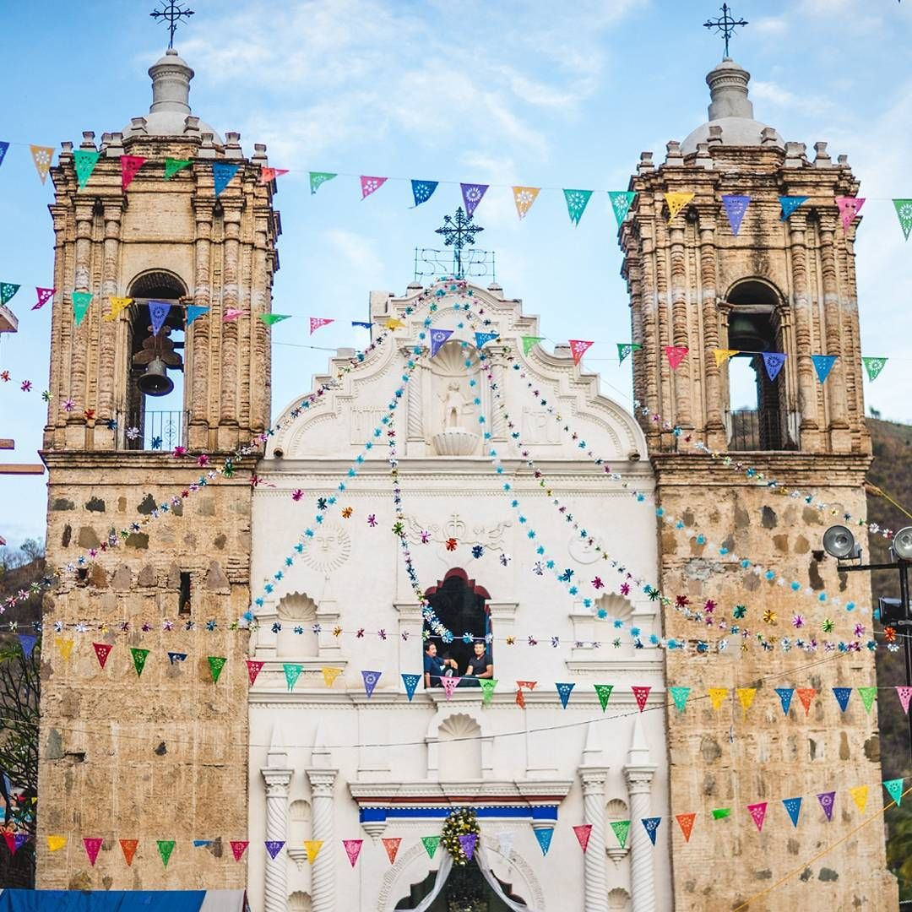
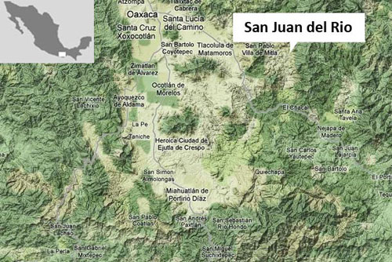
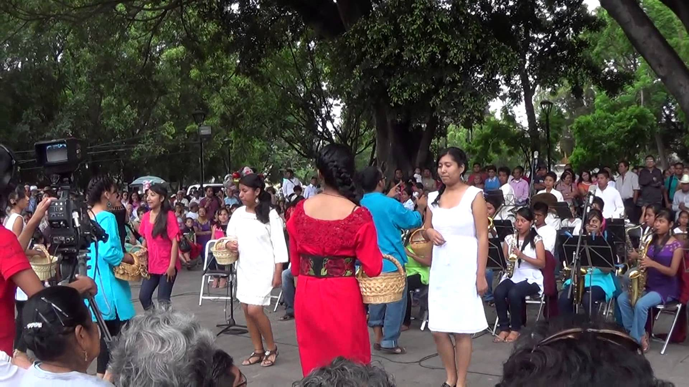
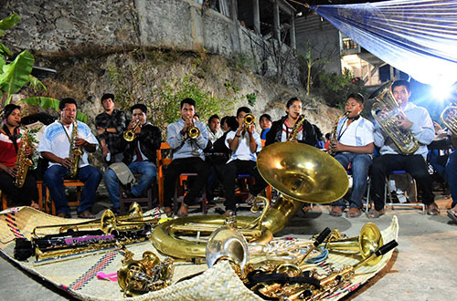
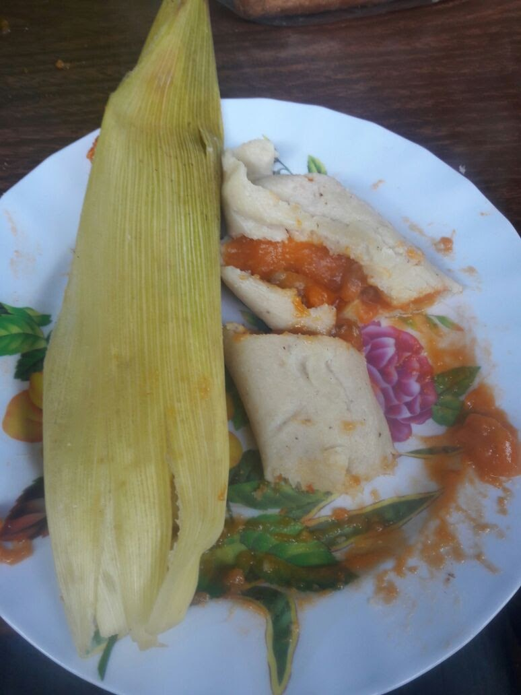

BIENVENIDOS A NUESTRA PAGINA WEB
El proposito de este sitio es para conocer un poco mas sobre la comunidad de San Juan del Rio

San Juan del Rio, Tierra del maguey ( laajsh do'ojb).
Disfruta del delicioso sabor ahumado del maguey recien horneado
CONOCE LA COMUNIDAD

Algo de historia

Ubicacion de la comunidad

Costumbres y Tradiciones

Musica
